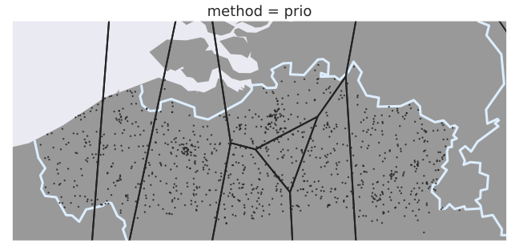
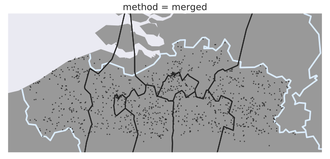

Introduction
The Open Definition defines open data as data that can be: “… freely used, modified, and shared by anyone for any purpose”. This may seem utopian, but these principles are being adopted all over the world. The OECD has documented the positive impact of Open Government Data [1], and similar ideas have surfaced in academics with the FAIR Data Principles [2] where a common guideline is to make data “As open as possible as possible, as closed as necessary” [3].
Consider the case of someone who is looking to buy a house, and the quality of service of wheelchair accessible public transit is important to them. A real estate site could include this information in their item listings, but only if they can find and access relevant datasets. Luckily, many public transit operators publish their timetables as open data. This is often done using de facto standards such as General Transit Feed Specification (GTFS) or using official standards such as Network Timetable Exchange (NeTEx). However, these data standards result in large data dumps: the combined GTFS feed of the public transit companies that operate in the Brussels area (SNCB, STIB, De Lijn, and Tec) is already over 1 GB of uncompressed data. A hobbyist developer that wants use a Raspberry Pi to show a dashboard of bus passages near them can run into issues ingesting and processing all this data.
Another use case for open transit data is route planning. The ideal route is subjective; a reasonable walking distance differs from person to person, and even depends on a person’s mood. Contemporary route planning services preprocess data to provide better query time performance [4, 5, 6], but this preprocessing also restricts the types of queries that can be answered. For example, an algorithm that reuses precomputed shortest paths between stops will not be able to give you the most scenic path – unless those are precomputed as well. But what if you could use your own device to calculate your own personalized routes? You could tweak journeys until you find exactly what you are looking for, without putting an unreasonable strain on a route planning service. This approach obviously comes with its own challenges, and ingesting data is again one of them. Downloading the entire dataset on your phone to plan a route from one adjacent city to another is too slow to be practical.
These examples show that the way data is published can restrict how the data can be used. What may be feasible for a corporation may not be feasible for a regular person, even though the idea of open data is to make the data usable by everyone.
Method
The Linked Connections publishing scheme already a good job at enabling applications to ingest the most relevant data, but each fragment still contains data from the entire transit operator’s service area. Fig. 1 shows that some regions served by the Flemish public transit operator, De Lijn, are more popular than others, implying that it makes sense to fragment by location.
However, first we should consider what is necessary to make publishing fragmented data viable in the real world. We make a distinction between data owners and data publishers, with a clear distinction between their responsibilities. A data owner focuses on maintaining the data quality, while a data publisher focuses on making the data accessible. Both roles come with their own challenges, and as such it is not uncommon for data owners to consult third parties to publish the data for them. This means that data publishers may not have control over the actual data – when the data changes they just have to follow. For example, public transit operators routinely add and remove temporary stops due to maintenance works, and these changes have to be reflected in the published data with as little friction as possible.
Data
Lead by the insights provided by Fig. 1, we will focus on Flemish public transit network for the remainder of this paper. Flanders is a small region within Europe, but with 487 inhabitans/km² in 2019 it is also one of the most densely populated [19]. The public transit network is equally dense; at the time of writing there are 35,791 stops spread out over 13,522 km² for a stops density of 2.6 stops/km². There are roughly 1 billion connections on a regular weekday, and the corresponding Linked Connections data results in over 10 billion RDF triples per day. We use one data from the first whole week of December as the base data in the rest of this section.
Clustering
Existing work has focused on clustering stops, or trips, into discrete sets of objects. This means that any time a new stop gets added by the data owner, the data publisher must explicitly label the new stop as well. For clustering algorithms such as k-Means this is relatively easy, but for algorithms such as METIS this means recomputing the entire clustering. Instead of coming up with another clustering algorithms that is easy to update, we propose to publish the clusters differently. Instead of creating discrete sets of stops, we partition the physical world. The resulting partitions are published as separate resources, allowing any agent to infer to which cluster every stop belongs. In other words, data publishers do not have to explicitly label every stop themselves – the data speaks for itself.
 
k-Means
Although k-Means is a simple algorithm, existing work has found it to be competitive with more complex methods [14], so we consider it among the state of the art for this particular use-case. As the name implies, this clustering distributes a given set of points in exactly clusters, where every point belongs to cluster with the nearest cluster mean. Iterative heuristics exist to compute this clustering, we used the implementation from scikit.learn 0.20.3 with default parameters, and using the stops’ WGS84 coordinates as input. To obtain to wanted spatial partitioning we create a Voronoi diagram using the cluster means as seed points. Because the Voronoi cells of two adjacent points on the convex hull share an infinitely long edge, we add some extra padding points that represent the bounding box of the operator’s service area – and then discard all infinite edges.
METIS
METIS is another algorithm that is used to partition public transit networks [13, 14], so we consider it to be the state of the art as well. Since it is a graph clustering algorithm, we must represent the public transit network as a graph. We follow the conventional approach of creating a vertex for every stop, and connecting them with an edge if they are connected through a single connection. Every edge is assigned a weight that corresponds to how many connections connect those stops. We used Python wrapper to compute the clustering, using the contig option to force contiguous partitions.
The METIS algorith only sees the network as a connectivity graph though – it does not know anything about the physical location of the stops. This means that even though it creates contiguous partitions, those partitions aren’t contiguous in the physical world. We obtain a clean spatial partitioning using an additional post-processing step that 1) creates the Voronoi diagram of all stops, 2) merges all Voronoi cells that belong to the same cluster, and 3) merge isolated rings into the encompassing cluster.
Prio
Both k-Means and METIS are general purpose clustering techniques, and both ignore an important feature of the data: k-Means does not consider network connectivity and METIS does not consider physical locations. Although the main goal of this paper is not to find a better clustering technique, we were curious how a simple domain-specific approach compares to traditional methods.
The algorithm iteratively selects the stops based on which trips pass through it. In the first iteration it selects the stop with the most unique trips, in the subsequent iterations it selects the stop with the most unique trips that the previous stop(s) did not have. As there is a finite amount of trips, this algorithm has a clear termination condition: when all trips are covered by one of the selected stops. After iterations it contains the $k$ most important hubs, which lead us to name this method prio. These selected stops are then used as seed points to create a Voronoi diagram. Fig. 3 contains all the necessary code to implement this, up until the creation of the Voronoi diagram.
Merged
Instead of stopping the previous algorithm after iterations we can also let it terminate, and then use the Jaccard similarity coefficient to merge the two most similar adjacent Voronoi regions until only remain. This makes the process more complex, but existing work has shown good results using hierarchical clustering techniques [14].
Hypermedia Controls
The obtained Voronoi regions are published to the web as stand-alone resources using the Hydra and GeoSPARQL vocabularies. The Hydra in this case is used to describe a partitioning as a collection of regions, and the wktLiteral datatype from the GeoSPARQL vocabulary is used to describe individual regions. GeoJSON is another common way to define geometries, but since GeoJSON polygons are incompatible with JSON-LD we chose to use a simple string representation: WKT. Fig. 4 contains a JSON-LD snippet of a single partition resource.
These partition resources are then be used to fragment Linked Connections data. This separation allows for reusing existing partitions, such as administrative regions. A modified Linked Connections server can ingest a given partitioning, and fragment the data accordingly. The server creates one hydra:PartialCollectionView instance per region, and then creates an index of all generated views using the tree ontology. This ontology is used to link every view to the resource that describes a geospatial area. Fig. 5 contains a JSON-LD snippet of such an index.
tree:node property points to a hydra:PartialCollectionView, which is a connections page from original Linked Connections specification. The tree:value property defines which geospatial area that view covers.
Evaluation
We have adapted an existing library for client-side route planning so that it can interpret our hypermedia controls, and decide which data to download. This library uses the earliest arrival time variant of the Connection Scan Algorithm. This algorithm, similar to Dijkstra’s algorithm, builds a list of which stops are reachable and how long it takes to reach them. A client that knows the location of each stop can also infer which clusters are reachable, so our adapted route planner simply fetches data for all reachable clusters – slowly growing its list of data sources. We focus on the use-case of client-side route planning because this a relatively demanding application.
As mentioned in Section 3, we use 1 week of Linked Connection as input to train the clustering algorithms. We then used each method to create 4, 8, 16, and 32 clusters. A redis-backed server then creates an ordered list of all connections within every generated region, and exposes these using the hypermedia controls defined in the Subsection 3.3. The same server also hosts a version of the data with one cluster that contains all the data, i.e. without any geospatial partitioning. Altogether we test 17 different partitionings, each data fragment contains 20 minutes of data.
We make extensive use of letter-value plots [20] as our results have a long tail, causing conventional visualizations such as box plots to label many results as outliers. These plots show the median value as a black line, and then show the 75%, 87.5%, … percentile as separate boxes, making it easy to compare these statistics.
Usability
As a proxy for how useful the geospatially fragmented data is for an end-user, we measure how much work the client has to do to come to the same result. Specifically, how long it takes for the same client to come to an answer with a given partitioning, as well as how much data was downloaded, and compare those values to those of the baseline – the unpartitioned data.
5,000 queries were randomly selected from a query log that was given to by the transit the operator itself. All these queries occurred on the same day, but throughout the day. We eliminate as many variables as possible to isolate the impact of the partitioning; the client and server run on two separate machines on the same local network, a constant 20 ms of latency is added per response, and the client only processes one query at a time.
Fig. 6 shows that having just a few clusters already significantly improves the query performance, but that adding more clusters has diminishing returns. Even without the overhead of ingesting unnecessary data the client still has to compute the route. The METIS results are somewhat surprising; they are slightly worse across the board, and even become worse when going from 16 to 32 clusters. As Fig. 2 shows, the clusters from METIS are more complex than those from other methods, which creates a heavier workload on the client. Fig. 7 shows that the amount of downloaded data does keep decreasing by adding more clusters, we can even avoid all unnecessary data by creating a cluster per stop.
Cacheability
Another important feature of Linked Connections is the cacheability of the data fragments, which gives a Linked Connections server its scalability. Because we are making the data more fine-grained, we have to measure the impact this has on the cacheability of the data. Unfortunately, we do not have access to any form of user ID, which makes it hard to benchmark a real world scenario where there are client-side and server-side caches. Instead, we measure how fast a cache warms up in every configuration, and what the hit rate of a warm cache is. These two metrics give an indication of how cacheable the partitioned data is, and how this compares to the cacheability of the original data.
While running the benchmarks for the usability metrics, we also record which resources are fetched. We then replay these requests, running them through a simulated LRU cache to measure the hit rates. Every partition results in roughly 70 MB of gzipped data per day, and we set the cache size to 20 MB. To measure the hit rates on a warm cache we first run all requests through a cache, and then create 1,000 samples of 500 requests to measure the overall hit rate of each sample. The hit rates on a cold cache are obtained by doing the same starting from a cold cache, and by varying the amount of requests per sample.


Fig. 8 and Fig. 9 show that partitioned data can improve the cache hit rate, but that caches take longer to warm up. All methods are competitive with each other at 4 and 8 clusters, but k-Means is outperformed by the other three at 16 and 32 clusters. Although using 8 instead of 4 clusters yields better hit rates on a warm cache, both configurations surpass the baseline warm cache hit rate of 26% after roughly 350 requests.
Discussion
Our findings shows that results from the field of route planning do not necessarily translate to publishing data on the web. When publishing processed data on the web, we need to keep the processed data to stay in sync with the raw data. We solve this problem by moving some of the clustering logic to the client, which can avoid downloading and parsing a lot of irrelevant data in return. Even a small amount of clusters can make a client-side route planner twice as fast.
The number of clusters has a noticeable impact on all evaluated metrics. More clusters do not necessarily lead to better results, as we quickly see diminishing returns in terms of query times. The amount of downloaded data does keep decreasing, but at the cost of cacheability. Interestingly, even when starting from a cold cache the cacheability of a small amount of clusters is on par with the cacheability of the original data. Although it takes longer to warm up, the hit rate of a warm cache is higher for fine-grained data.
METIS and k-Means yield good results in the amount of downloaded data metric, but both struggle in other tests. Clusters from METIS have a complex shape because it does not consider the stops’ locations, making it harder for clients to interpret them. As a result, the query times using METIS data are consistently worse than those using other methods. A similar pattern presents itself for the merge-based method, which is also noticeable worse in the query time metric – more so than in the downloaded data metric. The k-Means method on the other hand shows great results in both the query time and downloaded data metrics, but the resulting data fragments are harder to cache.
The prio method is the only method that performs well across all metrics. This method combines the geospatial and the graph-like features of public transit networks, unlike both k-Means and METIS. The merge-based approach does this all well, but is burdened by more complex cluster shapes. More than anything, partitioning and publishing public transit schedules seems to be an exercise in moderation: don’t use too many clusters, and stick to simple shapes.
Conclusion
The paper introduced hypermedia controls to describe geospatial partitions, which clients can use to discover clusters of public transit stops. We evaluated 4 different clustering methods for the use-case of client-side route planning: k-Means, METIS, and two domain-specific methods of our own. Despite being very popular in the field of route planning, METIS has subpar results compared to the other methods. The complex nature of METIS clusters make them hard to interpret for clients. The other ubiquitous method, k-Means, does lead to good query times, but is harder to cache – which is an important feature for publishing open data in a scalable fashion. The most promising method, both in terms of user convenience and cacheability, is to just create a Voronoi diagram around the most important transportation hubs. Although simple, this method results in simple clusters, while still incorporating both the geospatial and graph-like nature of transit data. The same less-is-more pattern repeats itself when looking at the role of the number of clusters; adding more clusters has diminishing returns on the query time, while making the data harder to cache.
Our goal was to make open transit data more useful, so that more people can enjoy it in more applications. And in that regard, we succeeded. A small amount of clusters, 4 or 8, and a simple clustering algorithm is all it takes to make client-side route planners more than twice as efficient. Preliminary results show that the cacheability, and thus the scalability, of this approach is on par with the existing Linked Connections publishing scheme. Future work can verify this scalability in the real world, and compare it to both route planning services and existing Linked Connections servers. On top of that, more work can be done into finding good clustering strategies, because what works well for integrated services does not appear to work well for publishing data.